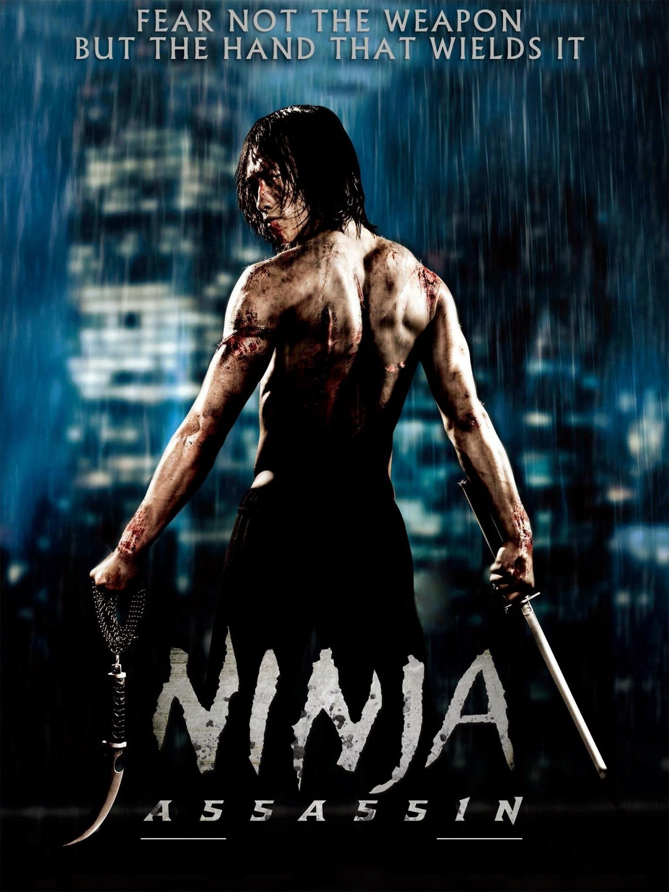
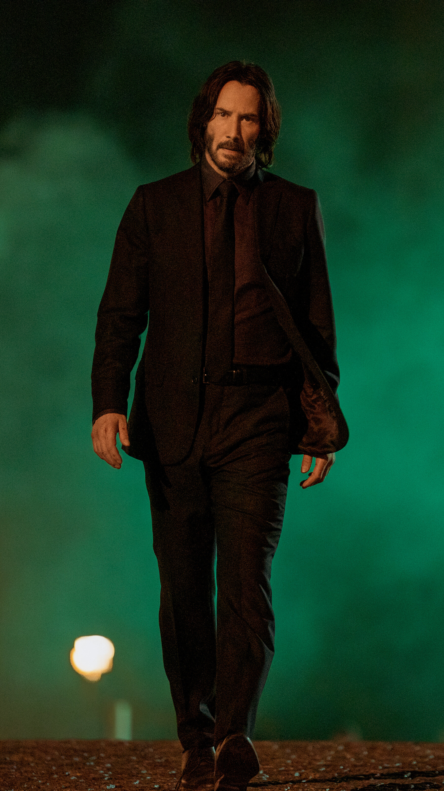
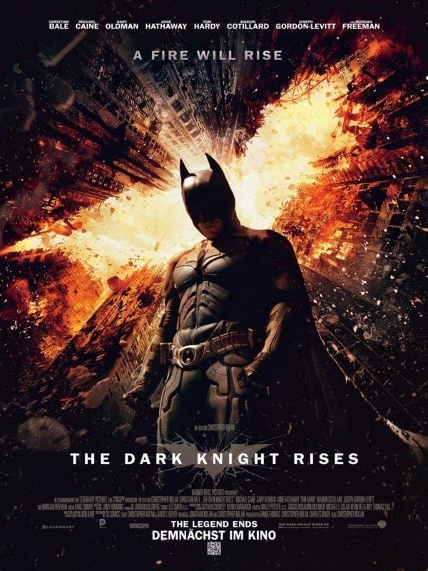
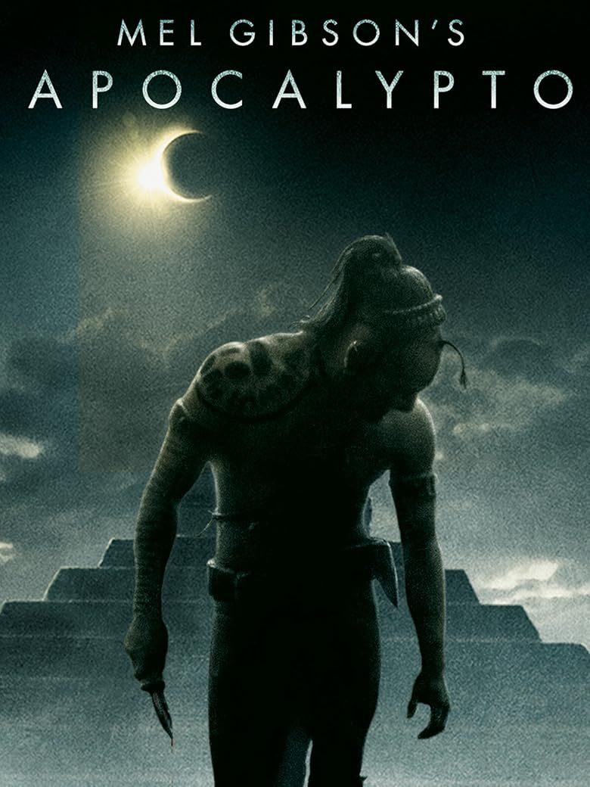
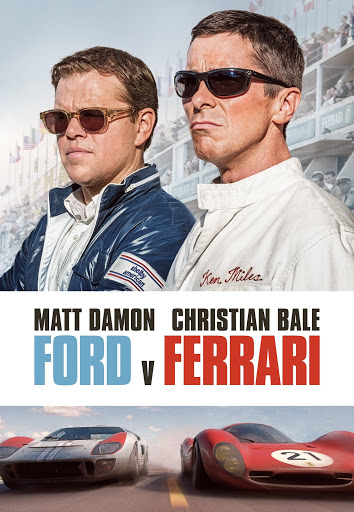
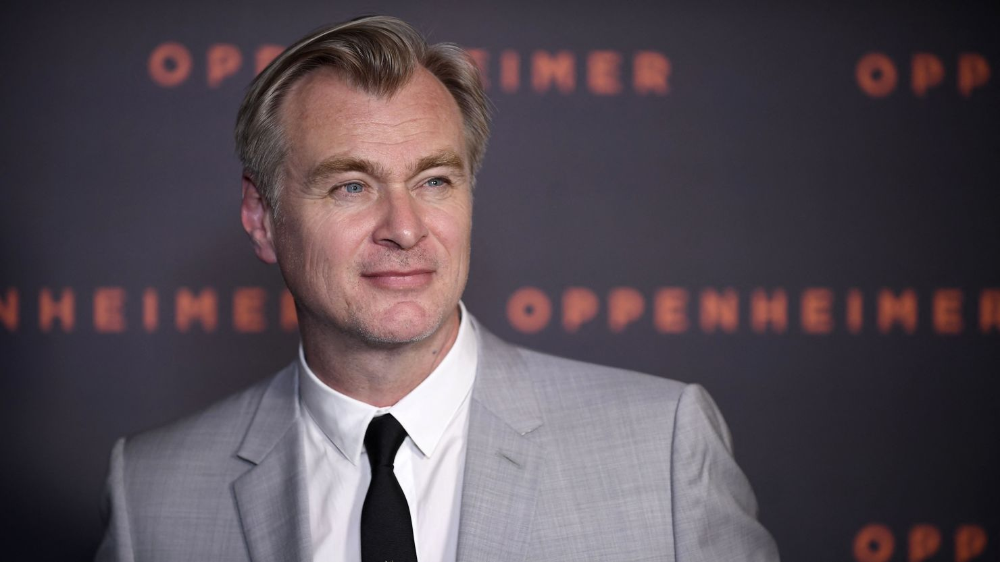
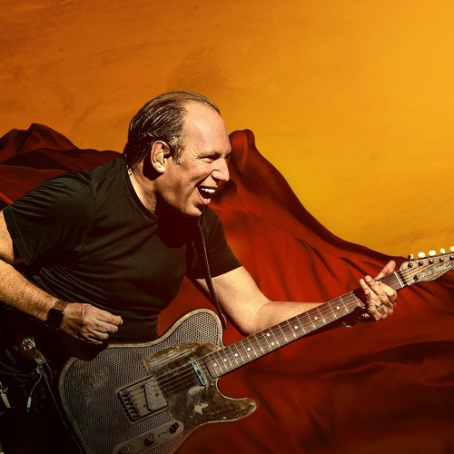
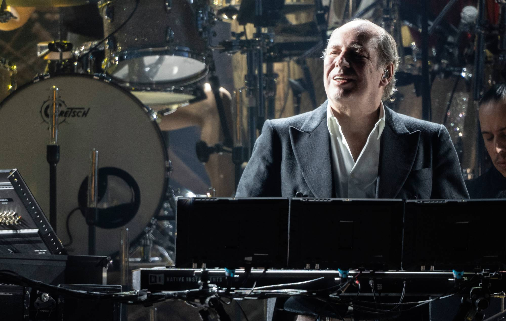
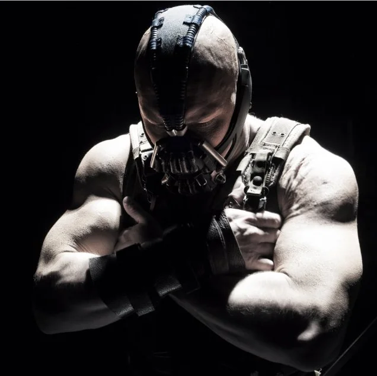

The Dark Knight Rises is the epic conclusion to Christopher Nolan’s Batman trilogy, set eight years after the events of The Dark Knight. Gotham City has been at peace, thanks to the Dent Act, which empowers the police to eradicate organized crime. However, this peace is built on a lie — the myth of Harvey Dent’s heroism and the false accusation that Batman murdered him. Bruce Wayne has retired, living as a recluse in Wayne Manor, physically weakened and emotionally broken by his years as Batman and the death of Rachel Dawes. His company, Wayne Enterprises, is struggling, and his faith in Gotham has nearly vanished.Into this fragile calm enters Selina Kyle, a cunning cat burglar who steals Bruce’s fingerprints for a mysterious employer. Her actions signal the beginning of a larger conspiracy that will soon engulf Gotham. The true threat emerges in the form of Bane, a brutal mercenary with unmatched physical strength and strategic brilliance. Bane is a former member of the League of Shadows, the same organization that once trained Bruce Wayne. He arrives in Gotham with the goal of completing Ra’s al Ghul’s mission — to destroy the corrupt city. Bane’s rise is meticulously planned. He manipulates Gotham’s underground, recruits an army of loyal followers, and isolates the city from the outside world. Using stolen technology from Wayne Enterprises, he orchestrates a devastating attack on the stock exchange, crippling Bruce’s fortune. He also exposes the corruption within Gotham’s elite, presenting himself as a liberator of the oppressed. Bruce, forced out of retirement, rebuilds his strength and returns as Batman to confront this new menace. Their first encounter ends in disaster. In a brutal and iconic fight beneath Gotham, Bane utterly defeats Batman, breaking his back and shattering his spirit. An old prisoner teaches him that true strength comes from fear — the fear of death. To escape, Bruce must climb the prison wall without a rope, risking his life completely. After several failed attempts, he finally succeeds, symbolically reborn as the Dark Knight once more.

Christopher Nolan is one of the most influential and visionary filmmakers of the 21st century. He was born on July 30, 1970, in London, England. From a young age, Nolan showed a deep interest in storytelling and cinema. He began making short films with his father’s camera while studying at University College London, where he majored in English literature. These films redefined the superhero genre, combining action, philosophy, and realism. The Dark Knight became a cultural phenomenon and earned Heath Ledger a posthumous Oscar for his role as the Joker.

The music for The Dark Knight Rises was composed by Hans Zimmer, one of the most famous and respected film music composers in the world. Hans Zimmer is a German composer and music producer known for blending traditional orchestral sounds with modern electronic elements. He has worked closely with director Christopher Nolan on many films, including Inception, Interstellar, Dunkirk, and The Dark Knight Trilogy. In The Dark Knight Rises, Zimmer created a powerful and emotional soundtrack that perfectly matches the film’s dark tone and epic scale. The music uses deep drums, chanting voices, and intense strings to represent both the heroism of Batman and the chaos brought by Bane. One of the most iconic parts of the score is the chant “Deshi Basara,” which means “Rise Up,” symbolizing Bruce Wayne’s struggle to overcome his pain and fear..
| Profile | Name | Song | Playlist |
|---|---|---|---|
 |
Hans Zimmer | Gotham’s Reckoning | |
| Hans Zimmer | Underground Army | ||
 |
Hans Zimmer | Born In Darkness | |
| Hans Zimmer | Fear Will Find You |
